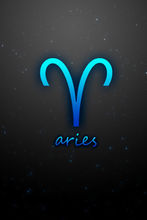
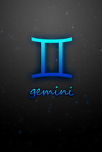
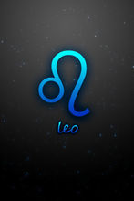
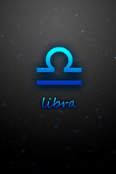
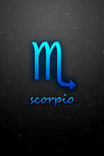
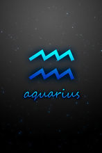

白羊座白羊座（3月21--4月20日）符号象征着新的开始。 符号能量：控制。由于白羊座的上进心强，有时难免冲动，忽略他人的感受。 白羊座的象征是一头公羊，是一种象形的方法，取出羊最明显的羊角和鼻梁部分也可以诠释成公羊的角和鼻子。白羊座始于春季的第一天（北半球），象征一个新的开始新生的绿芽，表现出大地新生和欣欣向荣的景象。由白羊座的神话可以联想到一些特质，例如冲动、勇往直前。 |
 |
金牛座金牛座（4月21日--5月20日）符号象征着力量。 符号能量：拥有。金牛座符号让人脚踏实地，但难免由于太固执而失去。 星座符号中的圆型代表着太阳的出现，顾名思义金牛在黄道十二宫中代表"金钱"，凡是能产生满足人们物质需要的各种设施、活动都属于它管辖范围，金牛座的外表温驯，但内心充满欲望。在古代，农夫播种之前都用牛来耕田犁地，因此它也是收入和报酬的代号。 |
双子座双子座（5月21日--6月21日）符号象征着多面性。 符号能量：掌握。双子座经常一心二用，兴趣广泛，但有时难免了解的不太深刻。 双子座的星座符号是像Ⅱ的两根的平行直线，两头再以两根较短的横条封口，代表着CASTOR与POLLUX这两颗永不分离的孪生星星，常被看成正反两面的象征，譬如对与错，施与受，教和学等，而在黄道十二宫中掌管"教育"的双子星座，不单指知识，还包含邮政以及针对学校及国家为人民所做的各种传播、沟通管道。 |
 |
巨蟹座巨蟹座（6月22日--7月22日）符号象征着坚强。 符号能量：热情。外表时常冷漠的巨蟹座，内心充满善意和温情，应该适当的释放出来。 巨蟹座的星座符号就像是一只顶着硬壳的可爱小螃蟹横行的模样，有些占星家则认为，巨蟹座的星座符号像是两只对峙的小螃蟹，平衡着一个至日的起点，太阳在夏日的第一天进入巨蟹座开始夏至，而巨蟹座在黄道十二宫中，掌管的是与房屋有关的，像是房地产、银行、房屋贷款等，都是巨蟹座的势力范围。 |
狮子座狮子座（7月23日--8月22日）符号象征着权力。 符号能量：清醒。狮子座很多地方比较优秀，也较有魅力，但容易虚荣和骄傲，需要清醒。 狮子座的星座符号是黄道十二宫中最简单辨认的了，就是一条狮子尾巴，狮子座掌管着运动、休闲等各项娱乐项目，由于是万兽之王，狮子座代表着人类不断的尝试表达自己，并且发掘自己潜在本质的能力，因此狮子星座会表现出一种慷慨、高贵的气质。 |
 |
处女座处女座（8月23日--9月22日）符号象征着神秘。 符号能量：分析。处女座总是追求完美，要懂得分析容得瑕疵。 处女座的星座符号可能是十二个星座符号中最难懂的，它与天蝎座符号十分相似，差别只是处女座符号上加上一个倒"v"，占星家认为，处女座的符号，就像是一位手持一串谷物的处女，而他们手中的每一粒谷物，都象征着由经验的田野中所收获的智慧果实，处女座代表着健康，它掌管药剂学，同时也是统计学和劳动力的代表。 |
天秤座天秤座（9月23日--10月23日）符号象征着平衡。 符号能量：衡量。公平是天秤座的优点，但要知道每个人心中的公平都不一样，没有标准。 天秤座的星座符号可以说是一令人一目了然，一看就知道是一把四平八稳的秤，要求的就是如何取得两方平衡的天枰，在黄道十二宫中，天秤代表着公平和正义，掌管着一个国家的法律还有外交的问题，因此天秤座是绝对要求平衡的星座，在平衡中必需要公正，天秤座同时也具有谦和有礼的特性。 |
 |
天蝎座天蝎座（10月24日--11月21日）符号象征着丰富。 符号能量：直觉。天蝎座比较深刻，有时冷漠，但是天蝎座直觉能力较强。 天蝎座的星座符号看起来就像是一只翘着尾巴的毒蝎子，但对于许多西方占星家的眼中，天蝎座的符号其实是"蛇"，因为蛇在上古时代即被视做"智慧"和"罪恶"的象征，众所皆知的的是，人类的始祖亚当、夏娃会被驱逐出伊甸园的主要罪魁祸首就是受不了蛇的引诱，才会吃下智慧果铸成大错。 |
 |
射手座射手座（11月22日--12月21日）符号象征着坦诚。 符号能量：思考。射手座具有冒险精神，可以像箭一样冲进未知领域，但往往由于太冲动而一发不可收拾。 射手座的符号象徵射手的箭，回到象形的简单形式；由射手座的神话可以看出射手座的智慧和爱好自由。射手的原型是拿弓箭的人马，下半身的马象徵追求绝对自由，上半身的人象徵知识和智慧，而手中的箭，则表现出射手的攻击性和伤人的一面。 |
摩羯座摩羯座（12月22日--1月19日）符号象征着坚韧。 符号能量：放松。摩羯座总是有登峰的欲求，不要太过紧张，放松平静下来可能效果更理想。 摩羯座的星座符号像是一笔划出山羊外形特征的一种古代象形文字，骨瘦如柴的身躯，却有攀登绝壁坚强的意志忍耐力，代表认真踏实的个性，而符号中有着山羊的头和胡须，其实摩羯座代表着就是山羊，而山羊本来就是一种个性非常强韧，且刻苦耐劳的动物。 |
 |
水瓶座水瓶座（1月20日--2月18日）符号象征着智慧。 符号能量：坚持。天赋可能让水瓶座比一些人更优秀，但多数成功来自点点滴滴的努力。 水瓶座的符号象徵水和空气的波，是具象但又抽象的；由水瓶座的神话中，可以看出水瓶座的爱好自由和个人主义。象徵水瓶座的波，是高度知性的代表，由波的特性去思考水瓶座的特质，看似有规律但没有具体的形象，是一个不可预测的星座。 |
 |
双鱼座双鱼座（2月19日--3月20日）符号象征着复杂。 符号能量：信心。双鱼座总是很彷徨，理想与现实的彷徨，感情的傍徨，要学会选择，可能并没有真正的对与错。 双鱼座的星座符号是两道新月形的弧，中间靠一道直线将它们串联起来，看起来就像是两条绑在一起的鱼，一条往上游去，另一条则向下游，完全背道而驰却因中间的一线相连，无论怎么拼命，结果还是无法分离，反而让自己身心俱疲、矛盾不已，正好明显的点出双鱼座天生的双重个性。 |
十二星座